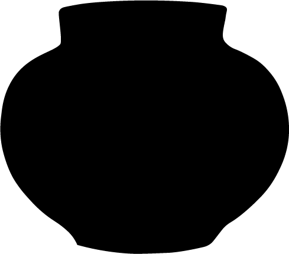

Ruth Crane


Large stoneware vessel, urn-shaped, blue and green glaze, small lid with small cylindrical handle, grey glaze inside both vessel and lid, small arts and crafts or art deco style "handles" at side.
Small yellow glazed bowl, glaze is iridescent under light, sun symbol on bottom.
Fulper Stangle Pottery 2 in. deep bowl with 4 in. diameter, rose pink, yellow and blue glaze on cream, cream glaze interior.
Rounded vase with fluting at neck, 3.5 inch lip, pink/purple glaze.
Squat vase with variegated green glaze, 3/4 inch lip.